Instalar con un Pendrive Booteable el SO Windows 11 en el ordenador asignado.
Para ello descargaremos primero el MediaTool de Windows y seleccionaremos el USB que queramos usar.
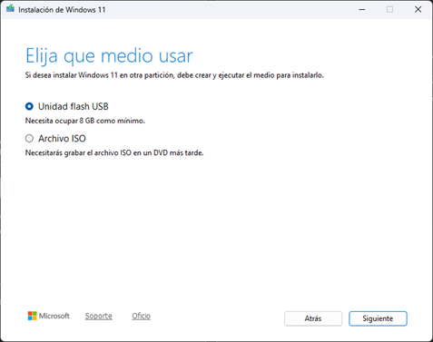
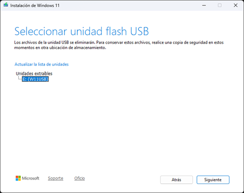
Ahora conectamos dicho USB al ordenador e iremos siguiendo los pasos.
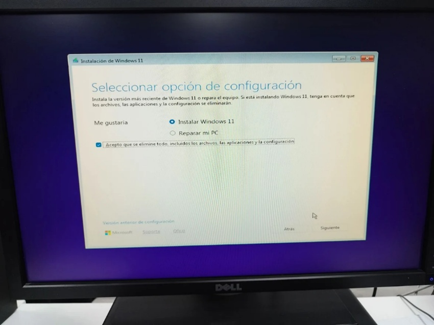
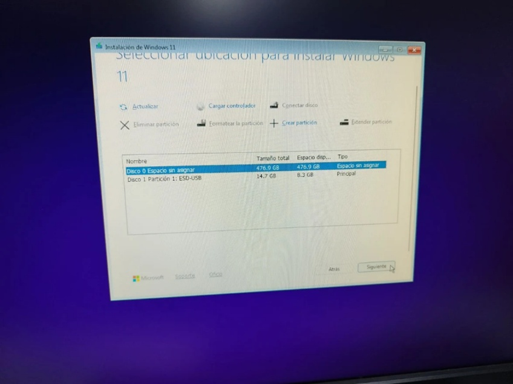
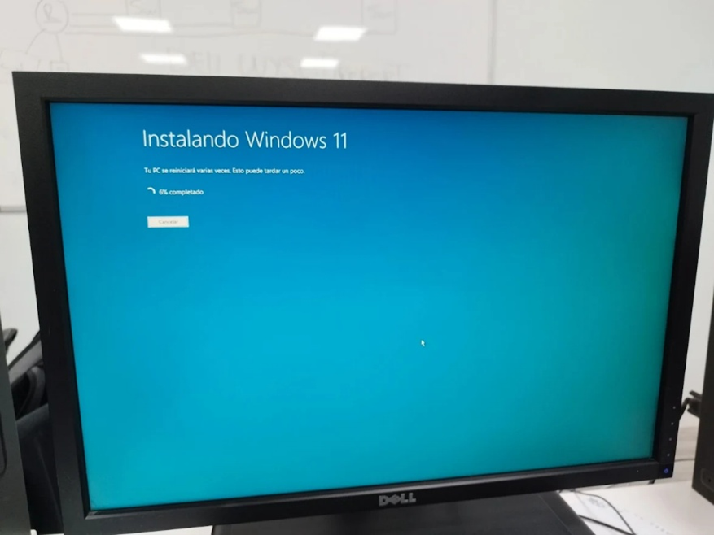
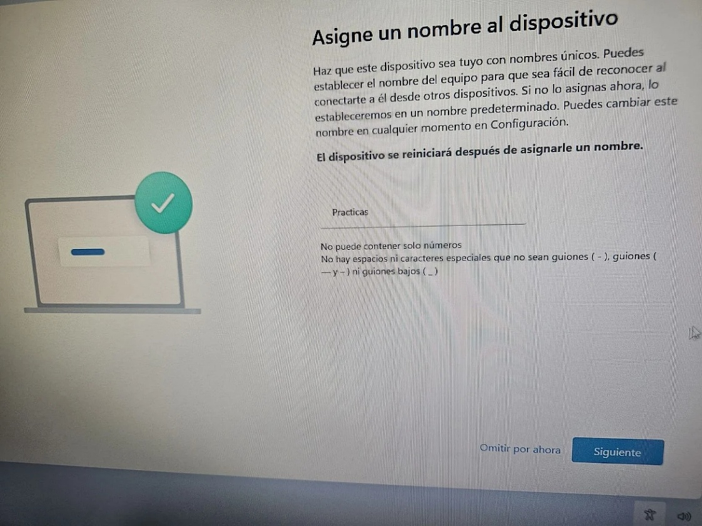
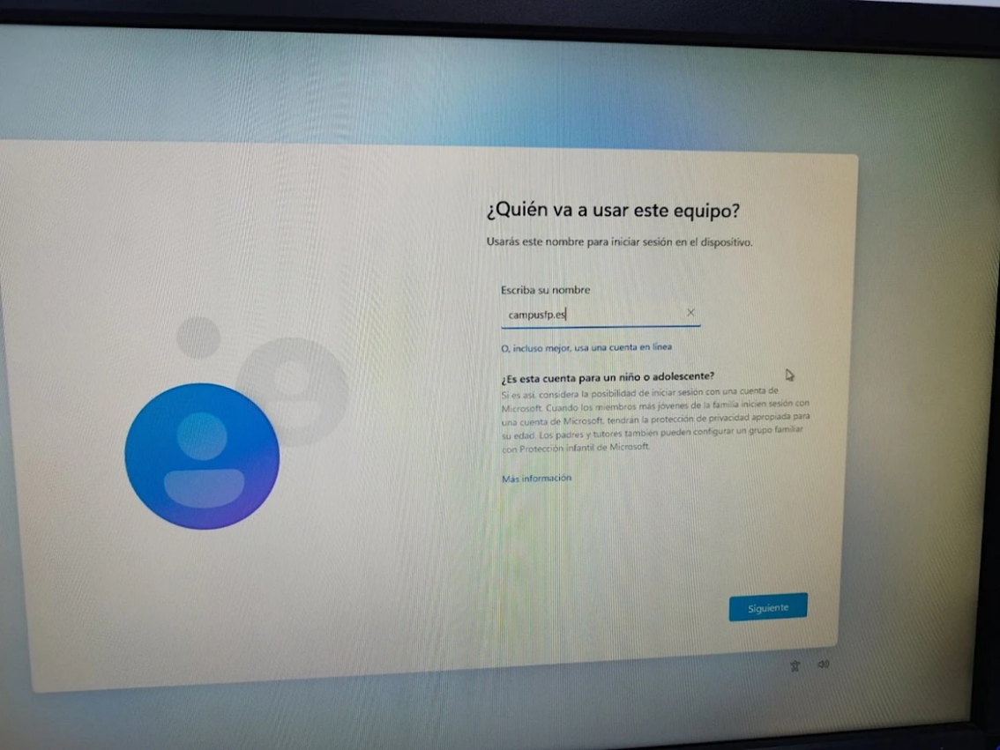
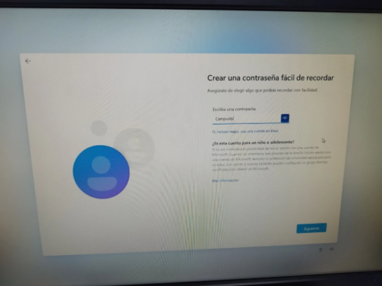
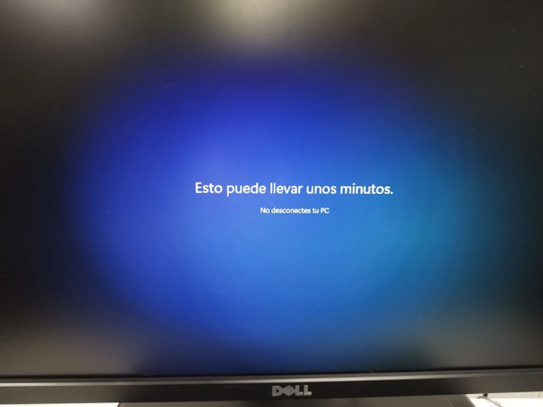
Instala con un Pendrive Booteable Ubuntu Server en la Raspberry o Wyse.
Para instalar Ubuntu Server, lo primero que necesitaremos será instalar Raspberry Pi Imager.
Empezaremos eligiendo la Raspberry que tenemos, en nuestro caso es la 4 Model B.
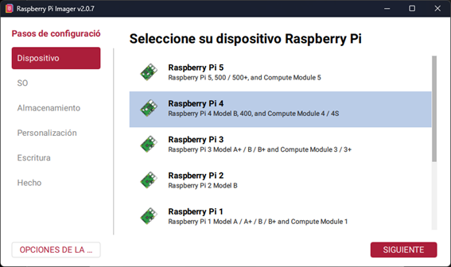
Aquí elegiremos la opción "Other general-purpose OS".
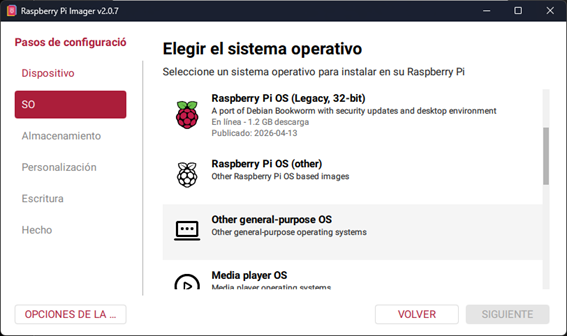
Aquí Ubuntu.
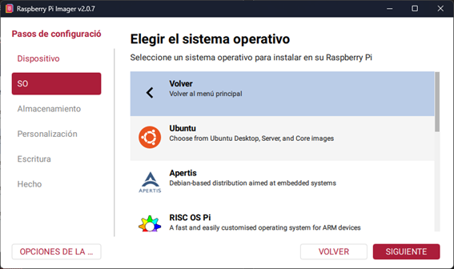
Y aquí Ubuntu Server 24.04 LTS.
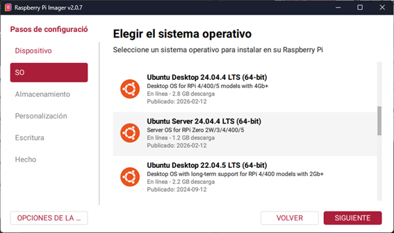
Aquí nuestra microSD.
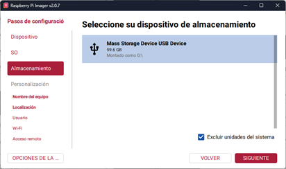
Aquí el nombre que aparecerá en la red.
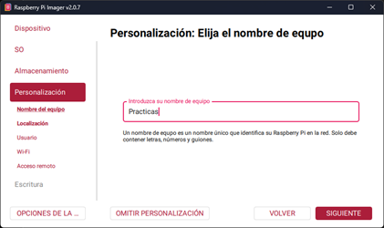
Aquí usuario y contraseña.
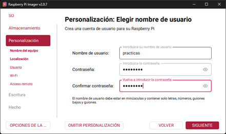
Y por último aquí a escribir.
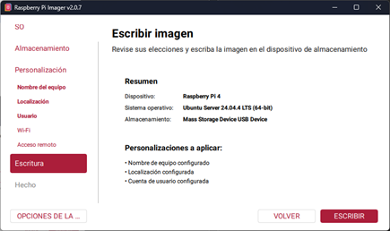
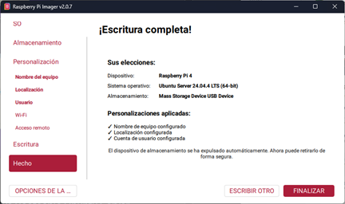
Ponemos la microSD en la Raspberry y encendemos. Así quedaría Ubuntu Server.
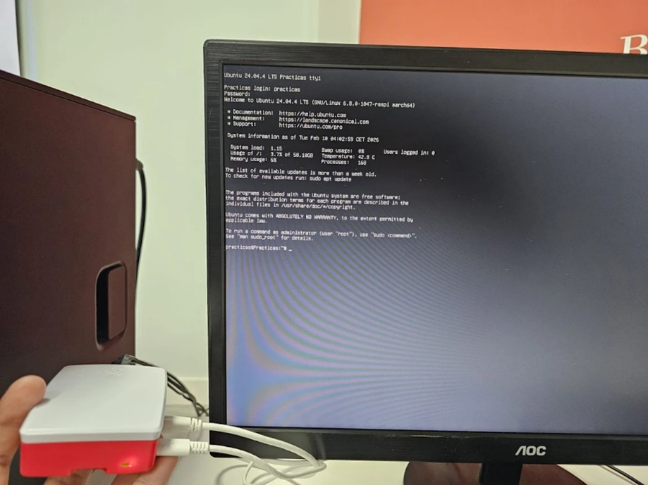
Instalación de aplicaciones necesarias para las prácticas: OCS Inventory, Cisco Packet Tracer y Visual Studio Code.
Para empezar, descargaremos los instaladores y los abriremos.
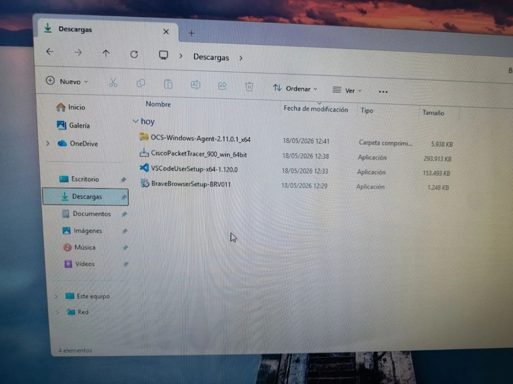
Solo hemos tenido que configurar una de ellas, la cual es OCS Inventory.
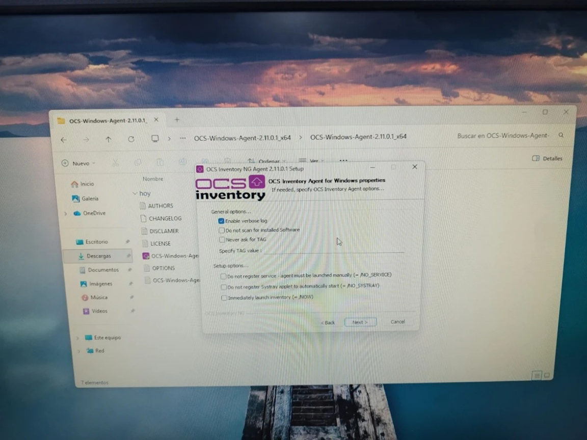
En OCS hemos tenido que enlazar el dominio con la aplicación.
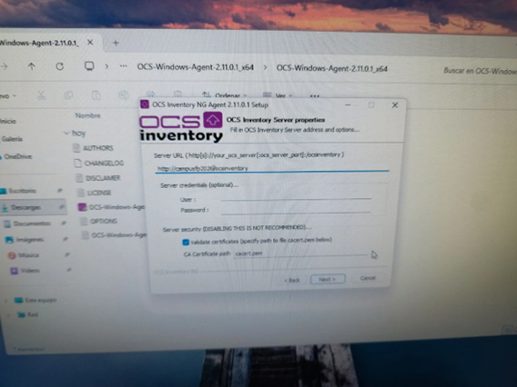
Y ya tendríamos el inventario subido por el profesor.
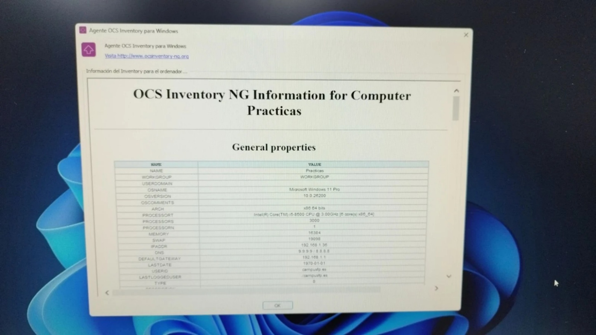
Y aquí todas las aplicaciones instaladas.
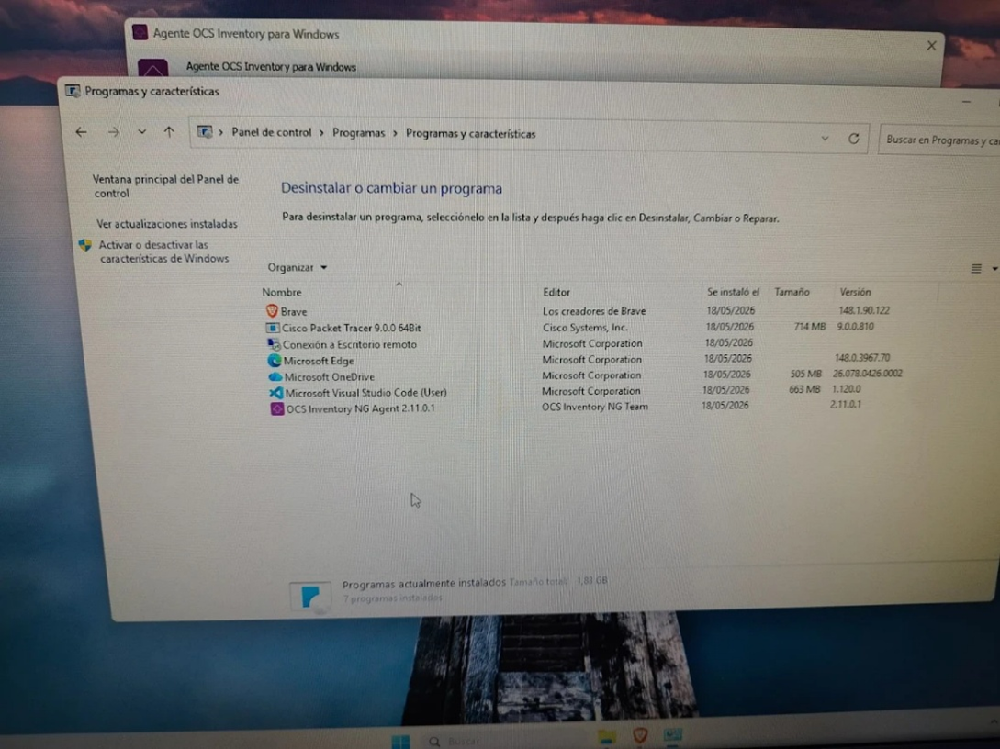